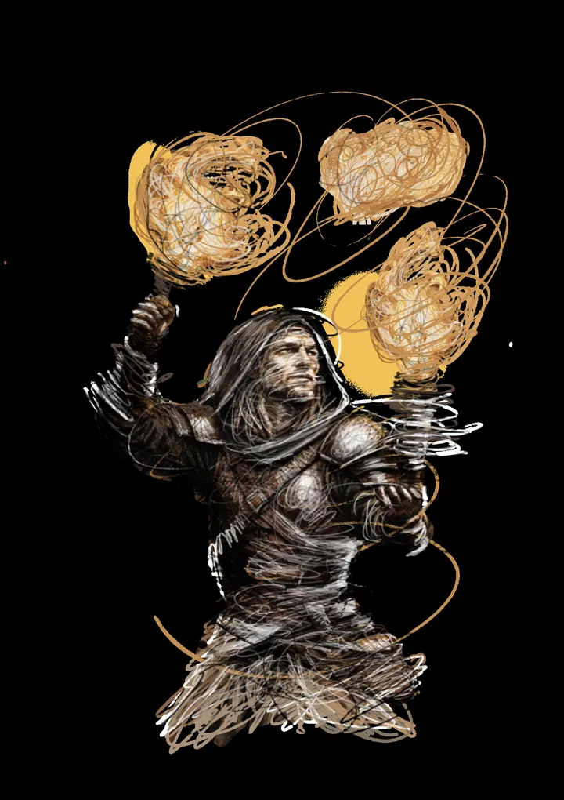

Friuli
da ven 4 set a dom 6 set · dalle 19:00
Medioevo a Valvasone
Rievocazione con oltre 150 spettacoli, taverne, artigiani e piu di mille figuranti.
 Indicazioni
Indicazioni
- Costi e prenotazioni
- Venerdì €4 · sabato e domenica €5 · Prevendita online disponibile
- Programma
- Programma ufficiale pubblicato. Il sito ufficiale segnala che il programma può ricevere aggiornamenti.
- In caso di maltempo
- Nessuna indicazione specifica pubblicata.
- Note
- Ingresso gratuito per persone con disabilità, minori fino a 14 anni e residenti di Valvasone Arzene.
L’EVENTO
Descrizione completa
Il borgo di Valvasone torna al Medioevo con tredici taverne, mille figuranti e oltre centocinquanta spettacoli. L’edizione 2026 è dedicata all’Orcolat e propone teatro, giostre, battaglie, artigiani, musica e attività per famiglie.
Ingresso gratuito per persone con disabilità, minori fino a 14 anni e residenti di Valvasone Arzene. La cena medievale non è compresa nel biglietto di venerdì.
IL PROGRAMMA
Programma e orari
Appuntamenti raccolti dalle fonti elencate. Dove manca un orario, non è ancora disponibile in questa scheda.
Venerdì 4 settembre
- 19:00 · Apertura del borgo
- 20:00 · Cena medievale nel Chiostro del Convento
- 20:30 · Artisti e artigiani nelle vie
- 22:00 · Teatro dei Misteri: “Orcolat”
- 23:30 · Fuochi propiziatori
Sabato 5 settembre
- 12:00 · Apertura
- 14:00 · Giochi e attività per famiglie
- 17:30 · Giostra medievale
- 20:00 · Prima battaglia al Brolo
- 22:00 · Teatro dei Misteri
- 23:30 · Fuochi propiziatori
Domenica 6 settembre
- 10:00 · Apertura e accoglienza accessibile in LIS
- 11:00 · Fiera medievale nelle vie
- 11:30 · Assedio del borgo
- 17:00 · Gran corteo
- 18:00 · Giostra medievale
- 20:30 · Teatro dei Misteri
- 22:30 · Chiusura
INFORMAZIONI UTILI
Prima di partire
- Ingresso gratuito per persone con disabilità, minori fino a 14 anni e residenti di Valvasone Arzene.
- La cena medievale non è compresa nel biglietto di venerdì.
- Contatti: medioevoavalvasone@gmail.com
ORGANIZZAZIONE